01Summary and architecture
MongoDB clients connect to one ORDS container on its own VM. A role-based database service, ords_svc, runs only on the Data Guard primary, and the ORDS connect string lists both databases. ORDS therefore follows the primary across switchover and failover with no configuration change, and clients always use 10.0.1.114:27017.
The build ran on DBCS (single instance, LVM storage, Oracle 19c) with ORDS 26.3. Each phase also gives the RAC / Grid Infrastructure steps used on ExaCC, where SCAN names and srvctl replace host IPs and triggers.
The dashed path is used only after a switchover or failover, when ords_svc moves to the former standby.
| Decision | Choice | Reason |
|---|---|---|
| Where ORDS runs | Separate VM (container), not on the database servers | Keeps DB VMs clean for patching; no contention with licensed cores |
| How ORDS finds the primary | Role-based service + two-host connect string | Survives switchover and failover without touching ORDS |
| Standby use | Failover target only | MongoDB API logins through a read-only standby pool fail (section 14) |
| Database version | 21c or later for official MongoDB API support | Non-autonomous 19c works in testing but is outside Oracle's supported list |
02Environment
Values are from the final build on 4 Nov 2026. An earlier test pair (ORDUAT, 10.0.1.168 / 10.0.1.231) was used for the first experiments; its issues are in section 13.
| Component | Host / IP | Detail |
|---|---|---|
| ORDS host | docvm 10.0.1.114 | Oracle Linux 9, Docker Compose; container orcl-ords, compose service ords; ORDS 26.3.0.r2721811 |
| Primary database | dbuat 10.0.1.80 | CDB ORAUAT, db_unique_name ORAUAT_4mb_jed, PDB UATPDB; 19c EE High Performance; LVM storage |
| Standby database | druat 10.0.1.78 | db_unique_name ORAUAT_d4g_jed; physical standby |
| Data Guard | broker orauat_dgconf | MaxPerformance; Fast-Start Failover disabled |
| Role-based service | both hosts | ords_svc.prvsharedsn.hubssvcn.oraclevcn.com, runs only on the primary |
| ORDS pool | default | Custom URL, 10.0.1.80 then 10.0.1.78; jdbc.InitialLimit 10, jdbc.MaxLimit 30 |
| MongoDB schema | MONGOUSER | ORDS-enabled, SODA_APP |
| Client | mongosh 2.14.0 | Server reports MongoDB 7.0.22 compatibility |
| Port | Direction | Purpose |
|---|---|---|
| 1521/TCP | ORDS VM → both DB hosts | JDBC (RAC: every SCAN IP and node VIP) |
| 27017/TCP | Clients → ORDS VM | MongoDB API (TLS) |
| 8080/TCP | Clients → ORDS VM | REST, REST-enabled SQL, SQL Developer Web |
03Prerequisites
Decide the storage type first. It changes Phase 1 (the service) and Phase 4 (the connect string).
| Check | Command | LVM single instance | RAC / Grid (ExaCC, ASM) |
|---|---|---|---|
| Clusterware | srvctl config database | "command not found" | Lists the database |
| SCAN | srvctl config scan | None: use host IP | SCAN name with 3 IPs |
| Service tooling | — | DBMS_SERVICE + triggers | srvctl add service -role PRIMARY |
| Connect string hosts | — | Primary IP + standby IP | Primary SCAN + standby SCAN |
Database checks (as SYS)
SELECT banner_full FROM v$version; -- 21c+ for official MongoDB API support
SELECT database_role, open_mode FROM v$database; -- primary READ WRITE
SHOW PDBS; -- target PDB READ WRITE
SELECT name, network_name, pdb FROM v$services; -- existing services and domain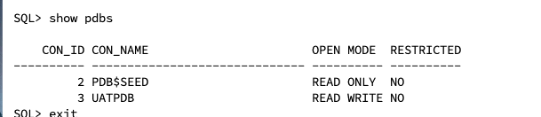
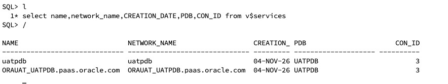
Network checks from the ORDS VM
nc -zv 10.0.1.80 1521 # primary
nc -zv 10.0.1.78 1521 # standby
nslookup <scan-name> # RAC only: must return the SCAN IPs- Security list or NSG allows TCP 1521 from 10.0.1.114 to both database hosts. For RAC, open it to every SCAN IP and node VIP, because SCAN redirects each connection to a VIP.
- Clients can reach 10.0.1.114 on 27017 and 8080.
- An Oracle Container Registry login works for the ORDS image (
docker login container-registry.oracle.com).
04Phase 1: Role-based service
ORDS connects by service name, and ords_svc must run only where the database role is PRIMARY. Use 4A on RAC/Grid or 4B on LVM. This build used 4B.
4A. RAC / Grid Infrastructure (ExaCC, DBCS on ASM)
Clusterware handles role awareness. Register the service on both databases with -role PRIMARY and start it on the primary only.
# primary cluster, as oracle
srvctl add service -db <primary_db_unique_name> -pdb UATPDB -service ords_svc \
-role PRIMARY -preferred <inst1>,<inst2> -failovertype SELECT -failovermethod BASIC
srvctl start service -db <primary_db_unique_name> -service ords_svc
# standby cluster: add only, do not start
srvctl add service -db <standby_db_unique_name> -pdb UATPDB -service ords_svc \
-role PRIMARY -preferred <inst1>,<inst2>
# verify
srvctl status service -db <primary_db_unique_name> -service ords_svc-preferred spreads the service across all RAC instances, so SCAN balances ORDS connections across nodes. On ExaCC the same commands run on each VM cluster; get each db_unique_name from srvctl config database.
4B. LVM single instance (used in this build)
There is no clusterware, so two triggers do the work. Oracle allows AFTER DB_ROLE_CHANGE triggers only in CDB$ROOT (ORA-65069 in a PDB), so the role-change trigger lives in the root and starts the service inside the PDB.
Create the service, a control procedure and a startup trigger. The objects reach the standby through redo.
ALTER SESSION SET CONTAINER = UATPDB;
EXEC DBMS_SERVICE.CREATE_SERVICE(service_name => 'ords_svc', network_name => 'ords_svc');
EXEC DBMS_SERVICE.START_SERVICE('ords_svc');
CREATE OR REPLACE PROCEDURE sys.ords_svc_ctl AS
v_role VARCHAR2(30);
BEGIN
SELECT database_role INTO v_role FROM v$database;
IF v_role = 'PRIMARY' THEN
DBMS_SERVICE.START_SERVICE('ords_svc');
ELSE
DBMS_SERVICE.STOP_SERVICE('ords_svc');
END IF;
EXCEPTION
WHEN OTHERS THEN NULL; -- already started/stopped
END;
/
CREATE OR REPLACE TRIGGER sys.ords_svc_startup
AFTER STARTUP ON DATABASE
BEGIN
sys.ords_svc_ctl;
END;
/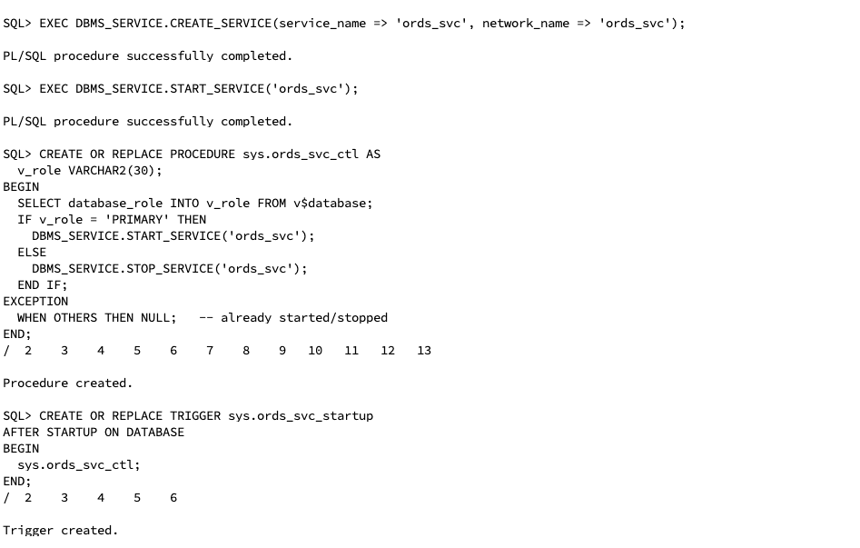
Create the role-change trigger. Set container => to your own PDB name.
ALTER SESSION SET CONTAINER = CDB$ROOT;
CREATE OR REPLACE TRIGGER sys.ords_svc_role_change
AFTER DB_ROLE_CHANGE ON DATABASE
DECLARE
v_role VARCHAR2(30);
c INTEGER;
n INTEGER;
BEGIN
SELECT database_role INTO v_role FROM v$database;
IF v_role = 'PRIMARY' THEN
c := DBMS_SQL.OPEN_CURSOR;
DBMS_SQL.PARSE(c, 'BEGIN DBMS_SERVICE.START_SERVICE(''ords_svc''); END;',
DBMS_SQL.NATIVE, container => 'UATPDB');
n := DBMS_SQL.EXECUTE(c);
DBMS_SQL.CLOSE_CURSOR(c);
END IF;
EXCEPTION
WHEN OTHERS THEN NULL; -- PDB not open yet: the PDB startup trigger covers it
END;
/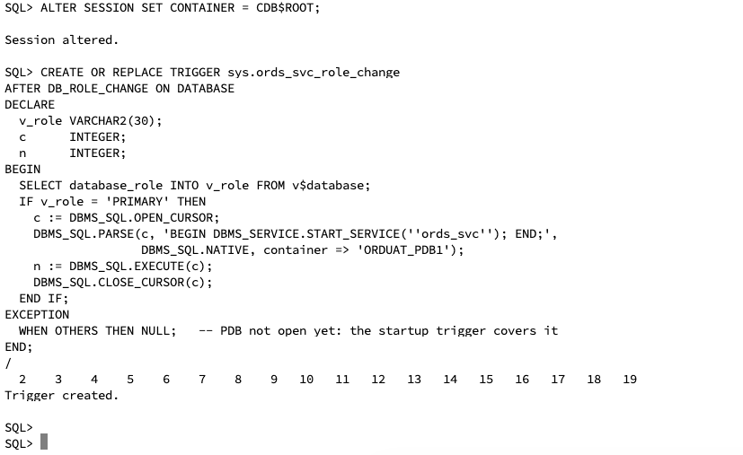
'ORDUAT_PDB1'" loading="lazy">The trigger in the screenshot names ORDUAT_PDB1, the PDB of the earlier test database. On ORAUAT the PDB is UATPDB. The error is silent because of WHEN OTHERS THEN NULL. The switchover test still worked because the PDB startup trigger started the service when the new primary opened UATPDB. Recreate the root trigger with container => 'UATPDB' so the service also starts when the PDB is already open at the role change.
Verify
lsnrctl status | grep -i ords_svc # on each host: present only on the primary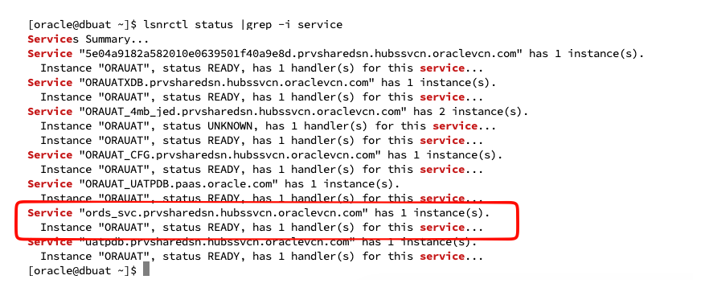
The listener shows the full name with its domain, ords_svc.prvsharedsn.hubssvcn.oraclevcn.com. Phases 3 and 4 use that exact string.
05Phase 2: Docker VM and compose file
ORDS runs from Oracle's official image, with its configuration in a host folder so settings survive restarts and image upgrades. The image runs as uid 54321, which must own that folder.
- Create the project folder and log in to the registry:
mkdir -p oracle-ords/config && cd oracle-ords sudo chown -R 54321:54321 config docker login container-registry.oracle.com - Open the client ports on the VM (and in its security list):
sudo firewall-cmd --permanent --add-port=27017/tcp --add-port=8080/tcp sudo firewall-cmd --reload - Create
docker-compose.yml:services: ords: image: container-registry.oracle.com/database/ords:${ORDS_TAG:-latest} container_name: orcl-ords command: ["serve"] restart: unless-stopped volumes: - ./config:/etc/ords/config ports: - "8080:8080" - "27017:27017" - Create
.envwithORDS_TAG=latest. Pin a specific release tag for production. - Start the container with
docker compose up -d, then check it withdocker ps.
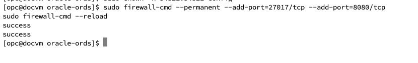
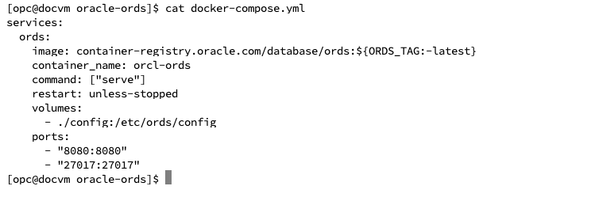
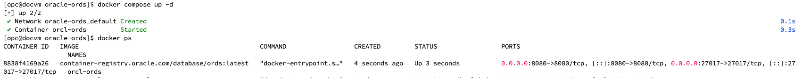
Service name vs container name. docker compose run takes the compose service name (ords), not container_name (orcl-ords). Every ORDS command here starts with docker compose run --rm ords …. Check with docker compose config --services. The container starts with an empty config and serves nothing until Phase 3 completes and it is restarted.
06Phase 3: Install ORDS into the primary PDB
Install once, on the primary, through ords_svc. The ORDS schema reaches the standby through redo. Never run ords install against a standby: it is read-only, and ORDS stops with "Missing the ORDS_PUBLIC_USER password".
6.1 Before installing
- Pick an
ORDS_PUBLIC_USERpassword that passes the PDB's password profile and differs from SYS. DBCS sets theDEFAULTprofile toORA12C_STRONG_VERIFY_FUNCTION. Test the exact string first:ALTER SESSION SET CONTAINER = UATPDB; SELECT profile, limit FROM dba_profiles WHERE resource_name = 'PASSWORD_VERIFY_FUNCTION'; CREATE USER pwtest IDENTIFIED BY "<candidate>"; DROP USER pwtest; - Start from an empty pool folder. A failed install leaves
config/databases/default/, and a retry reuses its stored settings and password:sudo rm -rf config/databases/default
6.2 Install
The two stdin lines are the SYS password and the new ORDS_PUBLIC_USER password. Single quotes stop bash from expanding !, $ and #, and each \ must end its line.
printf '%s\n%s\n' '<sys_pwd>' '<ords_public_pwd>' | \
docker compose run --rm -T ords install \
--admin-user SYS \
--db-hostname 10.0.1.80 --db-port 1521 \
--db-servicename ords_svc.prvsharedsn.hubssvcn.oraclevcn.com \
--feature-db-api true \
--feature-rest-enabled-sql true \
--feature-sdw true \
--password-stdinA clean run prints the "setting named … was set" lines, creates the proxy user, schema and objects, and ends with "Completed installation" (about 14 seconds here).
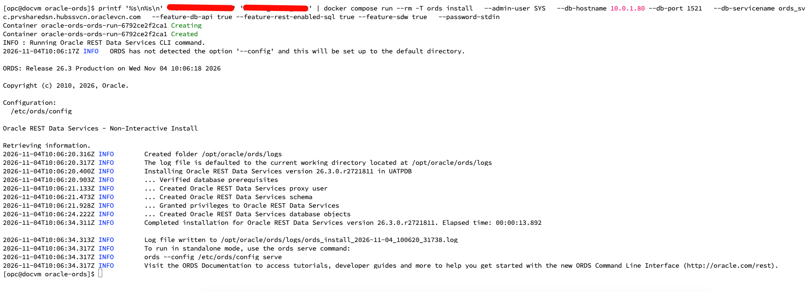
6.3 If ORA-28003 persists
If the install still fails with ORA-28003 using a password that passed the pwtest check, relax the profile only for the install and restore it immediately:
ALTER PROFILE DEFAULT LIMIT PASSWORD_VERIFY_FUNCTION NULL;
-- run the install
ALTER PROFILE DEFAULT LIMIT PASSWORD_VERIFY_FUNCTION ORA12C_STRONG_VERIFY_FUNCTION;If a failed run left ORDS_METADATA behind, remove it first with ords uninstall (same connection options, SYS password on stdin).
6.4 Verify
SELECT version FROM ords_metadata.ords_version;
SELECT username, account_status FROM dba_users
WHERE username IN ('ORDS_METADATA','ORDS_PUBLIC_USER');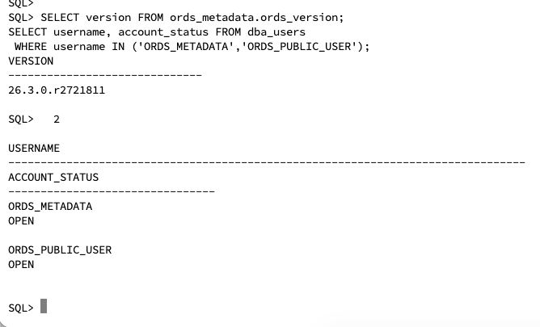
ORDSYS is an old built-in Oracle schema unrelated to this install. Leave it alone.
07Phase 4: Connect string and MongoDB API
Replace the install's single-host connection with a custom URL that lists the primary first and the standby second. ORDS tries each address and connects wherever ords_svc runs.
docker compose run --rm ords config set db.connectionType customurl7A. LVM single instance (used in this build): host IPs
docker compose run --rm ords config set db.customURL \
'jdbc:oracle:thin:@(DESCRIPTION=(CONNECT_TIMEOUT=5)(TRANSPORT_CONNECT_TIMEOUT=3)(RETRY_COUNT=3)(RETRY_DELAY=2)(FAILOVER=ON)(ADDRESS_LIST=(LOAD_BALANCE=OFF)(ADDRESS=(PROTOCOL=TCP)(HOST=10.0.1.80)(PORT=1521))(ADDRESS=(PROTOCOL=TCP)(HOST=10.0.1.78)(PORT=1521)))(CONNECT_DATA=(SERVICE_NAME=ords_svc.prvsharedsn.hubssvcn.oraclevcn.com)))'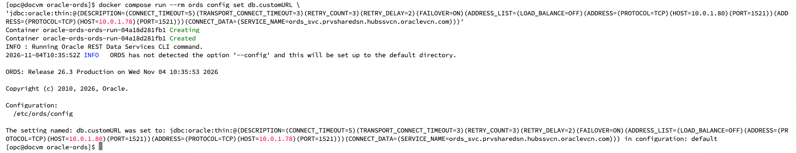
7B. RAC / ExaCC: SCAN names
Use one DESCRIPTION per cluster. Inside a cluster, LOAD_BALANCE=ON spreads connections across SCAN listeners. Between clusters, FAILOVER=ON tries the primary first.
docker compose run --rm ords config set db.customURL \
'jdbc:oracle:thin:@(DESCRIPTION_LIST=(FAILOVER=ON)(LOAD_BALANCE=OFF)(DESCRIPTION=(CONNECT_TIMEOUT=5)(TRANSPORT_CONNECT_TIMEOUT=3)(RETRY_COUNT=3)(ADDRESS_LIST=(LOAD_BALANCE=ON)(ADDRESS=(PROTOCOL=TCP)(HOST=<primary-scan>)(PORT=1521)))(CONNECT_DATA=(SERVICE_NAME=<ords_svc_full_name>)))(DESCRIPTION=(CONNECT_TIMEOUT=5)(TRANSPORT_CONNECT_TIMEOUT=3)(RETRY_COUNT=3)(ADDRESS_LIST=(LOAD_BALANCE=ON)(ADDRESS=(PROTOCOL=TCP)(HOST=<standby-scan>)(PORT=1521)))(CONNECT_DATA=(SERVICE_NAME=<ords_svc_full_name>))))'| Parameter | Effect |
|---|---|
FAILOVER=ON, outer LOAD_BALANCE=OFF | Try the primary first, then the standby |
CONNECT_TIMEOUT=5, TRANSPORT_CONNECT_TIMEOUT=3 | Give up on a dead host quickly |
RETRY_COUNT=3, RETRY_DELAY=2 | Retry the list while roles change |
Inner LOAD_BALANCE=ON (RAC) | Spread across SCAN listeners and instances |
Enable the MongoDB API and size the pool
docker compose run --rm ords config set mongo.enabled true
docker compose run --rm ords config set mongo.port 27017
docker compose run --rm ords config set jdbc.InitialLimit 10
docker compose run --rm ords config set jdbc.MaxLimit 30
docker compose restart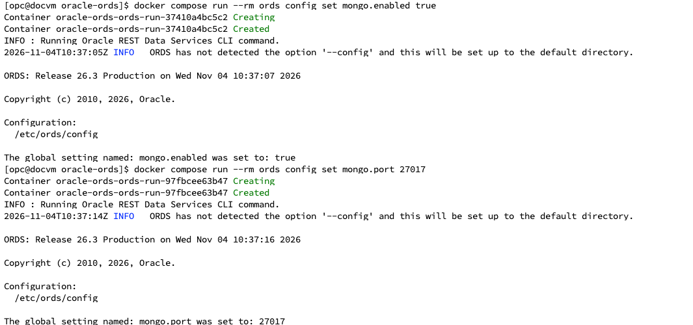
Confirm
Wait about 30 seconds after a restart. Pools are created after startup.
docker compose logs --since 2m ords | grep -A8 "Mapped local pools"
docker compose logs --since 2m ords | grep -i mongodb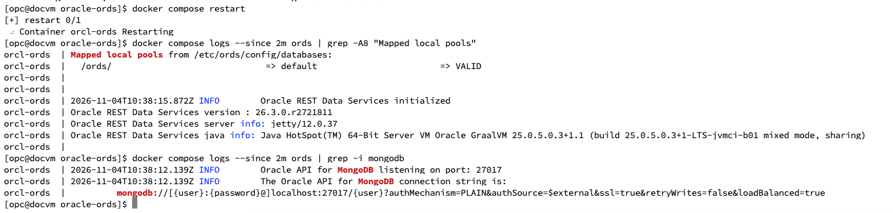
The API uses TLS with a self-signed certificate by default. For production, set standalone.https.cert and standalone.https.cert.key to a CA-signed certificate. mongo.tls false is for isolated tests only, and it disables routing to extra pools (section 11).
08Phase 5: Database users and privileges
Create users on the primary only; Data Guard copies them to the standby. On RAC, run once in the PDB from any instance. Each MongoDB "database" maps to one ORDS-enabled schema.
| User | Created by | Role |
|---|---|---|
SYS (or ORDS_INSTALL_ADMIN) | DBA | Runs ords install and upgrades only |
ORDS_METADATA | ords install | Owns ORDS objects; never log in as it |
ORDS_PUBLIC_USER | ords install | Pool user; proxies into application schemas |
MONGOUSER | DBA | Owns the MongoDB collections |
ALTER SESSION SET CONTAINER = UATPDB;
CREATE USER mongouser IDENTIFIED BY "<pwd>"
DEFAULT TABLESPACE users QUOTA UNLIMITED ON users;
GRANT CREATE SESSION TO mongouser;
GRANT SODA_APP TO mongouser; -- required for the MongoDB API
GRANT CREATE TABLE TO mongouser;
GRANT CREATE VIEW TO mongouser;
GRANT CREATE SEQUENCE TO mongouser;
GRANT CREATE PROCEDURE TO mongouser;
GRANT CREATE JOB TO mongouser; -- optional
BEGIN
ORDS_ADMIN.ENABLE_SCHEMA(p_schema => 'MONGOUSER');
END;
/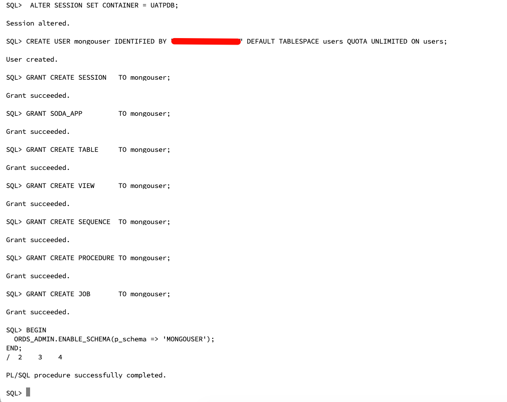
ENABLE_SCHEMA registers the schema and gives ORDS_PUBLIC_USER proxy access to it. PLS-00201 on ORDS_ADMIN means ORDS is not installed in this PDB, or the session is in CDB$ROOT.
Verify
SELECT granted_role FROM dba_role_privs WHERE grantee = 'MONGOUSER';
SELECT proxy, client FROM proxy_users WHERE client = 'MONGOUSER';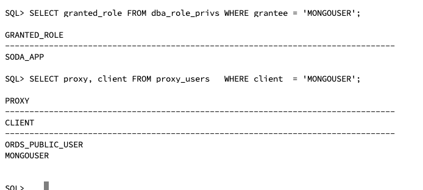
Optional installer user without SYS. Run CREATE USER ords_install_admin IDENTIFIED BY "<pwd>";, then ords_installer_privileges.sql ORDS_INSTALL_ADMIN from the ORDS scripts/installer/ folder. Use --admin-user ORDS_INSTALL_ADMIN in Phase 3 and lock the account between upgrades.
09Phase 6: Testing
All four checks passed on the primary, ORAUAT_4mb_jed. Clients always use the ORDS address 10.0.1.114, never a database host.
On the client, run sudo dnf install -y mongodb-mongosh, or run the shell from Docker: docker run -it --rm --network host mongo:7 mongosh '<uri>'.
The reply names the database that served it.
curl -s -u 'MONGOUSER:<pwd>' -H 'Content-Type: application/sql' \
-d "select sys_context('userenv','db_unique_name') from dual" \
http://10.0.1.114:8080/ords/mongouser/_/sql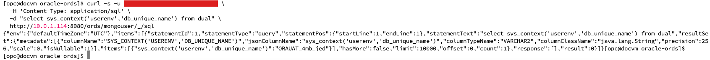
-p prompts for the password and keeps it out of shell history.
mongosh 'mongodb://mongouser@10.0.1.114:27017/mongouser?authMechanism=PLAIN&authSource=$external&tls=true&tlsAllowInvalidCertificates=true&retryWrites=false&loadBalanced=true' -p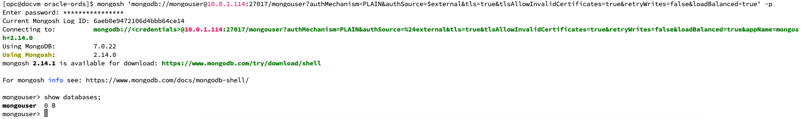
db.test.insertOne({site: "primary", at: new Date()})
db.test.find()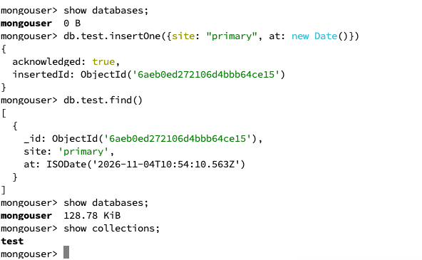
SELECT json_serialize(data) FROM mongouser.test;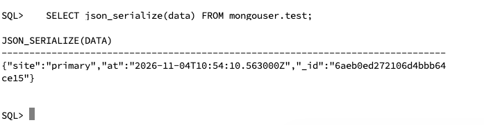
A password typed inside the URI must be URL-encoded (# → %23, @ → %40). With -p it does not.
10Phase 7: Switchover test
Passed After roles swapped, ords_svc ran only on the new primary (druat), and the same mongosh command to 10.0.1.114 returned the document written before the switchover. ORDS needed no change or restart.
dgmgrl sys@<primary_tns>
DGMGRL> show configuration;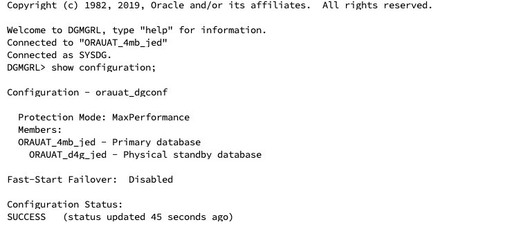
DGMGRL> switchover to ORAUAT_d4g_jed;
DGMGRL> show configuration;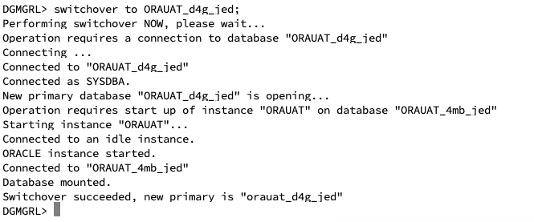
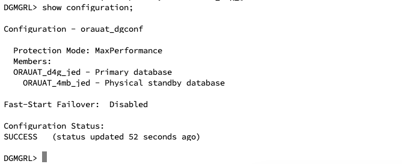
lsnrctl status | grep -i ords_svc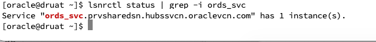
Wait about 30 seconds, reconnect with the same mongosh command to 10.0.1.114, and run db.test.find().
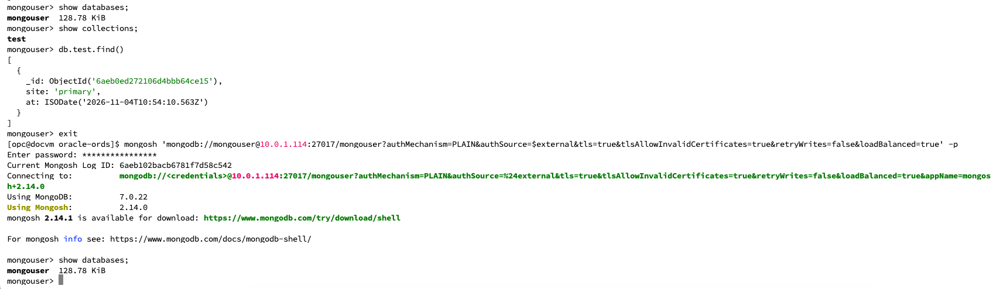
Rerun the curl test. db_unique_name now returns ORAUAT_d4g_jed.
DGMGRL> switchover to ORAUAT_4mb_jed;RAC differences
| Item | LVM single instance | RAC / ExaCC |
|---|---|---|
| What moves the service | PDB startup trigger and root role-change trigger | Clusterware, from -role PRIMARY |
| Check the service | lsnrctl status | grep ords_svc | srvctl status service -db <db> -service ords_svc |
| Where ORDS reconnects | Standby host IP | Standby SCAN, then any instance running the service |
| Fast failover notice | Not available | Optional: enable FAN/ONS so the pool drops dead connections faster |
Expect a few seconds of errors while roles change. Applications should retry the operation.
If ORDS still fails after the switchover, run docker compose logs --since 5m ords | grep ORA-. ORA-12514 on both hosts means ords_svc did not start on the new primary. Start it (srvctl start service …, or EXEC DBMS_SERVICE.START_SERVICE('ords_svc'); in the PDB) and recheck Phase 1, including the PDB name in the root trigger.
11Multiple databases in one ORDS
One ORDS container can serve several databases, each through its own named pool. ORDS picks the pool from the hostname the client connects with: the REST Host header, or the host in the MongoDB URI. Requests that match no hostname go to default. Hostname routing needs mongo.tls left at true.
Each pool lives in config/databases/<pool>/ with pool.xml, a wallet/ holding the ORDS_PUBLIC_USER password, and an optional hostnames file. To check whether the target PDB already has ORDS, run SELECT version FROM ords_metadata.ords_version;. ORA-00942 means Method A; a version means Method B.
Method A: new database without ORDS
Installs the schema and creates the pool.
printf '%s\n%s\n' '<db2_sys_pwd>' '<db2_ords_public_pwd>' | \
docker compose run --rm -T ords install --db-pool db2 \
--admin-user SYS --db-hostname <db2-ip-or-scan> --db-port 1521 \
--db-servicename <db2_service> \
--feature-db-api true --feature-rest-enabled-sql true --feature-sdw true \
--password-stdinMethod B: database already has ORDS
Writes the pool configuration only.
P=db3
docker compose run --rm ords config --db-pool $P set db.connectionType basic
docker compose run --rm ords config --db-pool $P set db.hostname <db-ip-or-scan>
docker compose run --rm ords config --db-pool $P set db.port 1521
docker compose run --rm ords config --db-pool $P set db.servicename <service>
docker compose run --rm ords config --db-pool $P set db.username ORDS_PUBLIC_USER
docker compose run --rm ords config --db-pool $P set restEnabledSql.active true
printf '%s' '<ords_public_pwd>' | \
docker compose run --rm -T ords config --db-pool $P secret --password-stdin db.passwordFor a Data Guard pair behind an extra pool, use db.connectionType customurl with a role-based service, exactly as in Phase 4.
Route, restart, verify
printf '%s\n%s\n' 'ords-db2.local' 'db2.prvsharedsn.hubssvcn.oraclevcn.com' | sudo tee config/databases/db2/hostnames
sudo chown -R 54321:54321 config/databases
docker compose restart ords && sleep 30
docker compose logs --since 1m ords | grep -A12 "Mapped local pools"Each name in hostnames must be unique across pools and must resolve, on the client, to the ORDS VM (10.0.1.114). Clients then connect with that name, for example mongodb://mongouser@ords-db2.local:27017/mongouser?…. Connecting by IP lands on default.
| Task | Command (prefix docker compose run --rm ords) |
|---|---|
| List one pool | config --db-pool db2 list |
| Show stored password | config --db-pool db2 get --secret db.password |
| Size a pool | config --db-pool db2 set jdbc.MaxLimit 30 |
| Remove a pool | sudo rm -rf config/databases/db2, then restart |
12Traditional install without Docker
The same design runs with ORDS installed from RPM on a Linux VM as a systemd service. Phases 1, 5, 6 and 7 are unchanged; only the ORDS commands and paths differ.
| Item | Docker | Traditional |
|---|---|---|
| ORDS command | docker compose run --rm ords <args> | ords --config /etc/ords/config <args> (as oracle) |
| Config folder | ./config | /etc/ords/config |
| Start / restart | docker compose up -d / restart | sudo systemctl start ords / restart ords |
| Logs | docker compose logs ords | sudo journalctl -u ords |
| Owner of config | uid 54321 | oracle:oinstall |
- Install ORDS and its JDK from the Oracle Linux repo:
sudo dnf config-manager --add-repo https://yum.oracle.com/repo/OracleLinux/OL9/oracle/software/x86_64 sudo dnf install -y ords sudo mkdir -p /etc/ords/config && sudo chown -R oracle:oinstall /etc/ords/config sudo grep ORDS_CONFIG /etc/ords.conf # should read ORDS_CONFIG=/etc/ords/config sudo firewall-cmd --permanent --add-port=8080/tcp --add-port=27017/tcp && sudo firewall-cmd --reload - Install into the primary PDB, as
oracle:sudo su - oracle printf '%s\n%s\n' '<sys_pwd>' '<ords_public_pwd>' | \ ords --config /etc/ords/config install --admin-user SYS \ --db-hostname 10.0.1.80 --db-port 1521 \ --db-servicename ords_svc.prvsharedsn.hubssvcn.oraclevcn.com \ --feature-db-api true --feature-rest-enabled-sql true --feature-sdw true \ --password-stdin - Set the two-host URL (Phase 4, 7A or 7B), the MongoDB API and the pool size:
ords --config /etc/ords/config config set db.connectionType customurl ords --config /etc/ords/config config set db.customURL '<URL from Phase 4>' ords --config /etc/ords/config config set mongo.enabled true ords --config /etc/ords/config config set jdbc.MaxLimit 30 exit - Start and check:
sudo systemctl enable --now ords sudo journalctl -u ords --since "5 min ago" | grep -E -A8 "Mapped local pools|MongoDB"
Run every ords command as oracle. Files created as root break the service with permission errors; sudo chown -R oracle:oinstall /etc/ords/config fixes them. To upgrade, run sudo dnf update ords, rerun the install against the primary, then restart.
13Issues and fixes log
Every problem met during the build, in the order it occurred. Start any new investigation with docker compose logs --since 10m ords | grep -A10 "Mapped local pools" and … | grep -i -E "SEVERE|ORA-".
| # | Symptom | Cause | Fix |
|---|---|---|---|
| 1 | mongosh: command not found | Shell not installed on the VM | sudo dnf install -y mongodb-mongosh, or the mongo:7 image |
| 2 | MongoParseError: Password contains unescaped characters | # in the password inside the URI | URL-encode (%23), or omit it and use -p |
| 3 | ORA-01017 for SYS during ords install | --password-stdin given but nothing piped in | Put printf '%s\n%s\n' … | before the command |
| 4 | "Missing the ORDS_PUBLIC_USER password" | ords install run against the read-only standby | Never install on a standby; use config-only pool settings |
| 5 | Pool INVALID, ORA-01017 for ORDS_PUBLIC_USER; get --secret → "Index 0 out of bounds" | Empty pool wallet | Delete config/databases/<pool>/wallet, set the secret with --password-stdin |
| 6 | Database unavailable … named database is not available | The pool behind that address was INVALID, or the hostname was missing from its hostnames file | Fix the pool error; add the exact client hostname; restart and wait 30 s |
| 7 | default => INVALID, ORA-12514 at 10.0.1.168 | Static service on one host; after a role change the service was not there | The role-based service and two-host URL in this document |
| 8 | Pool INVALID, ORA-12170 to 10.0.1.30 | Port 1521 blocked or host down | Security list/NSG and host firewall; nc -zv <host> 1521 |
| 9 | ORA-65069 creating the role-change trigger | AFTER DB_ROLE_CHANGE not allowed in a PDB | Create it in CDB$ROOT; start the service with DBMS_SQL.PARSE(…, container => '<PDB>') |
| 10 | Root trigger names ORDUAT_PDB1 on ORAUAT | Copied from the earlier test database | Recreate with container => 'UATPDB' (open item) |
| 11 | no such service: orcl-ords | docker compose run takes the service name, not container_name | Use ords |
| 12 | ORA-20202 … ORA-28003 password verification failed during install | ORDS_PUBLIC_USER password rejected by ORA12C_STRONG_VERIFY_FUNCTION; the second stdin line was the SYS password | Use a separate, tested password (section 6.1) |
| 13 | ORA-28003 again with a new password, and no "setting named" lines | The first failed run had written config/databases/default; the retry reused it | sudo rm -rf config/databases/default and rerun; if it still fails, relax the profile for the install only (section 6.3) |
| 14 | MongoDB login "Invalid credential or not authorized" through a standby pool | ORDS MongoDB layer rejects logins on a read-only standby (section 14) | Use the standby only as a failover target |
| 15 | tail: cannot open 'config/mongologs/*' | Relative mongo.access.log resolves under global/standalone/ | Read config/global/standalone/mongologs/mongo-access.log |
Issue 11: service vs container name
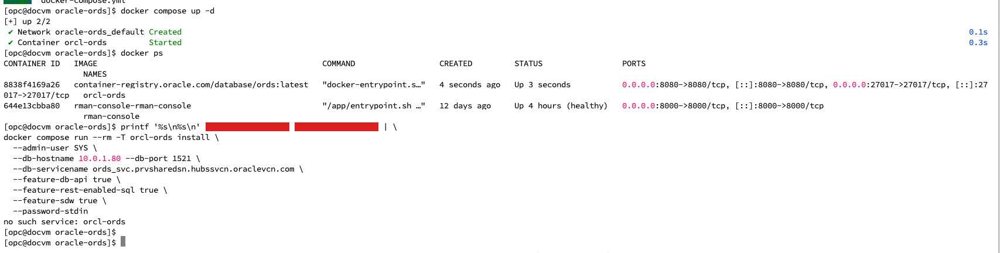
Issue 12: first ORA-28003
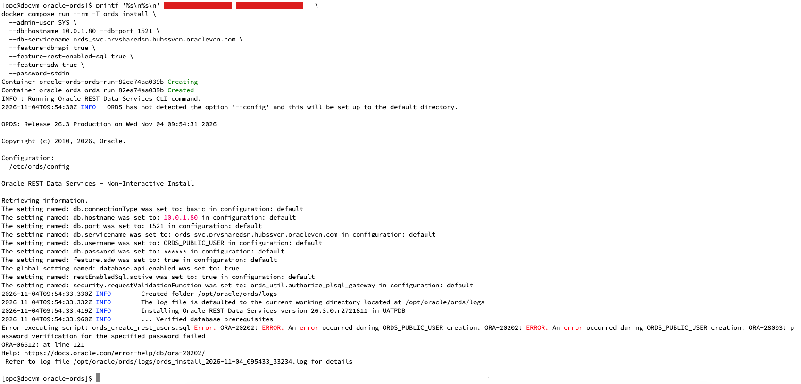
Profile check while diagnosing issue 12
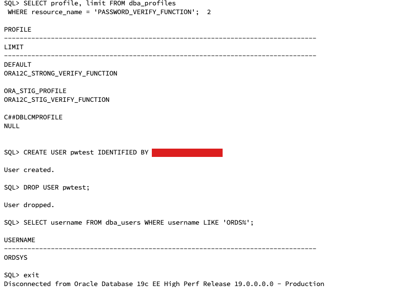
Issue 13: retry reused the stale pool
Note that the "setting named" lines are missing from this output.
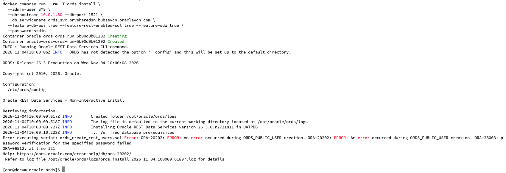
After removing config/databases/default, the install completed (section 6.2).
14Known limitation: MongoDB API through a standby pool
Reading MongoDB data from an Active Data Guard standby through a separate ORDS pool did not work. Treat the standby as a failover target only, and raise an Oracle SR if read offload is a requirement.
Test setup: ORDS 26.3, Oracle 19.33, standby READ ONLY WITH APPLY, a second pool routed by a hostnames file as described in the ORDS documentation (§9.5).
| Check on the standby pool | Result |
|---|---|
| Pool status at startup | VALID |
REST-enabled SQL as MONGOUSER (curl with Host: header) | HTTP 200 |
| SQL*Plus login as MONGOUSER | Succeeds |
SQL*Plus proxy login ORDS_PUBLIC_USER[MONGOUSER] | Succeeds |
MongoDB API login (saslStart) | "Invalid credential or not authorized; logon denied" in about 6 ms |
| ORDS log with debug on | No ORA- error, no stack trace |
v$session during the attempt | Proxy session opened as MONGOUSER; only logon-recursive SQL ran |
The ORDS documentation describes pool routing but doesn't state that a read-only standby is supported for the MongoDB API, and non-autonomous 19c is outside its supported list. For the SR, attach the MongoDB access-log lines, config --db-pool <pool> list and the startup log.
15Operations and security
| Task | Command (prefix docker compose run --rm ords) |
|---|---|
| Show pool settings | config list |
| Show the connect string | config get db.customURL |
| Show the pool password | config get --secret db.password |
| Reset the pool password | printf '%s' '<pwd>' | docker compose run --rm -T ords config secret --password-stdin db.password |
| MongoDB access log | config set mongo.access.log mongologs → config/global/standalone/mongologs/ |
| Follow logs | docker compose logs -f ords |
| Upgrade ORDS | Change ORDS_TAG, docker compose pull, rerun Phase 3 against the primary, restart |
Open items
- Recreate
sys.ords_svc_role_changeinCDB$ROOTwithcontainer => 'UATPDB' - Rotate the SYS,
ORDS_PUBLIC_USERandMONGOUSERpasswords used during setup, then update the pool secret after changingORDS_PUBLIC_USER - Clear install commands from shell history on docvm (
history -d <n>) - Remove leftover pools from the earlier test (
standby,dbsty,db2) if they still exist in any config folder
Security checklist
- Replace the self-signed certificate (
standalone.https.cert,standalone.https.cert.key) with a CA-signed one covering every client hostname - Restrict 27017 and 8080 to application subnets
- Pin
ORDS_TAGto a specific release - Back up the
config/folder; it holds pool settings and wallets - Production: run two or more ORDS containers behind a TCP load balancer on 27017 and 8080
- Production: move to 21c or later (23ai preferred) for official MongoDB API support